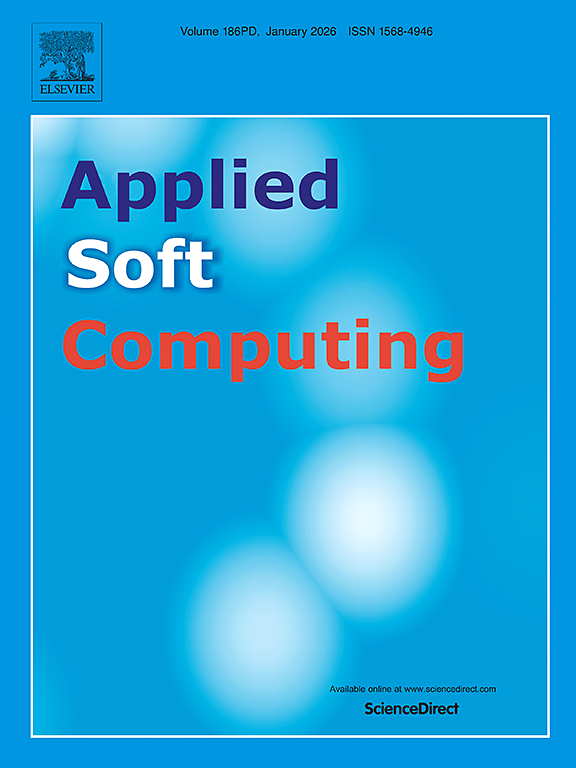
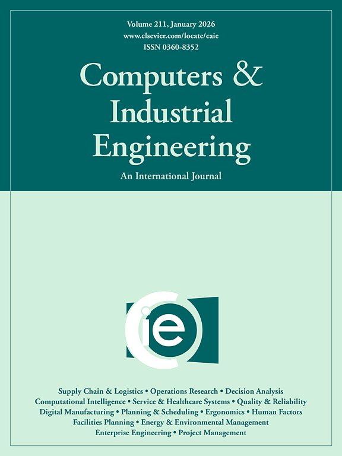
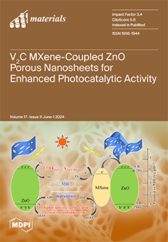
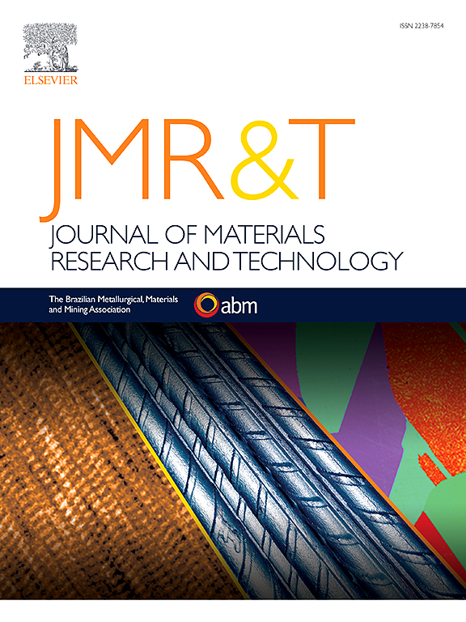
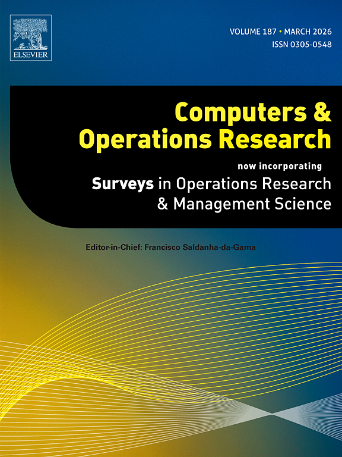
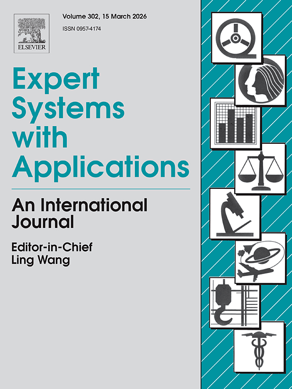
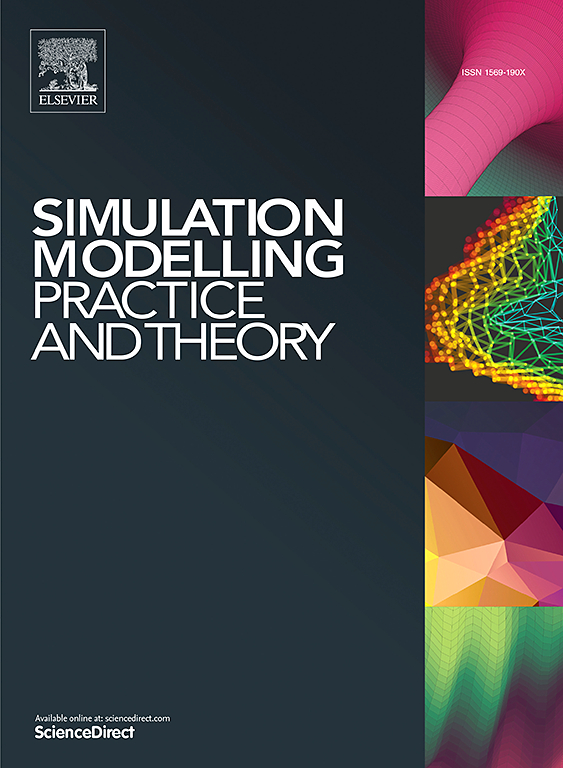
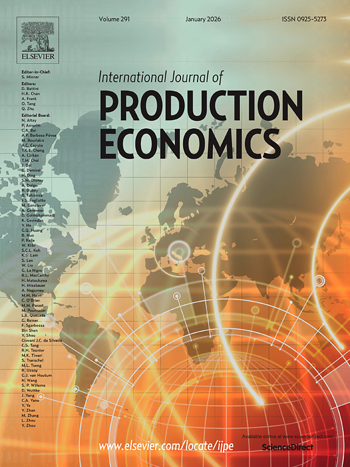
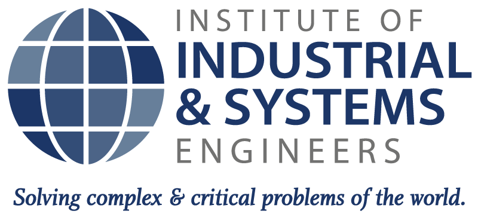
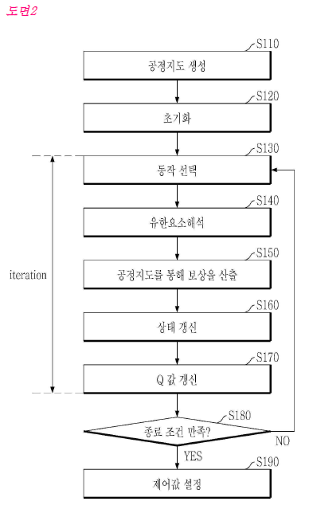

Integrated long-term capacity expansion and operational scheduling for regional power grids: A MISO case study
Major Revision
#네트워크최적화
Transportation Research Part E: Logistics and Transportation Review, 204, p.104415, 2025

Applied Soft Computing, p.113930, 2025

IEEE Transactions on Intelligent Transportation Systems, 2025

Computers & Industrial Engineering, 197, p.110565, 2024

Materials, 17(11), p.2578, 2024

The International Journal of Advanced Manufacturing Technology, pp.1–24, 2024
Journal of Materials Research and Technology, 27, pp.8228–8243, 2023

Computers & Operations Research, 160, p.106389, 2023

Systems, 11(10), p.514, 2023

Expert Systems with Applications, 227, p.120260, 2023

Journal of Materials Research and Technology, 26, pp.5576–5593, 2023
Simulation Modelling Practice and Theory, 124, p.102730, 2023

Journal of Materials Research and Technology, 23, pp.1995–2009, 2023
Transportation Research Part C: Emerging Technologies, 143, p.103831, 2022

IEEE Transactions on Intelligent Transportation Systems, 22(12), pp.7521–7530, 2020
Transportation Research Part E: Logistics and Transportation Review, 136, p.101901, 2020
International Journal of Production Economics, 214, pp.220–233, 2019

등록된 국내 논문이 없습니다.
Available at SSRN 4168513
IFIP International Conference on Advances in Production Management Systems, August 2021. Cham: Springer International Publishing, pp. 43–51
Advances in Production Management Systems. Artificial Intelligence for Sustainable and Resilient Production Systems: IFIP WG 5.7 International Conference, APMS 2021, Nantes, France, September 5–9, 2021, Proceedings, Part III. Springer International Publishing, pp. 33–42
Available at SSRN 4588071
Procedia Manufacturing, 39, pp.300–306, 2019
Procedia Manufacturing, 39, pp.307–313, 2019
INFORMS Annual Meeting, Seattle, US, 2019

International Conference on Production Research 25th (ICPR25), Chicago, US, 2019
International Conference on Production Research 25th (ICPR25), Chicago, US, 2019
INFORMS Annual Meeting, Phoenix, US, 2018
IISE Annual Meeting, Orlando, US, 2018

Korean Patent No. 10-2023-0071207
